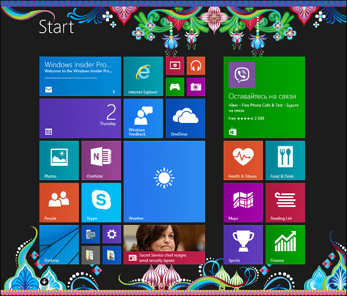
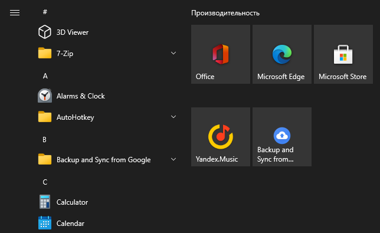
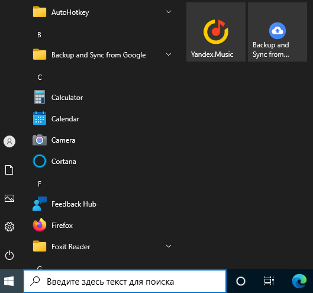
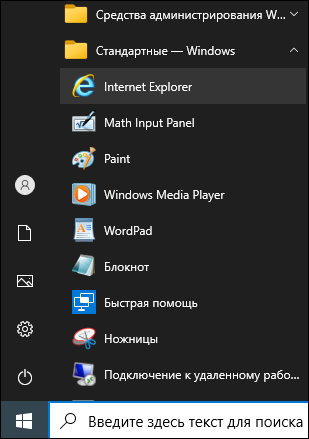
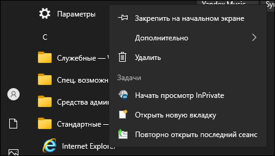
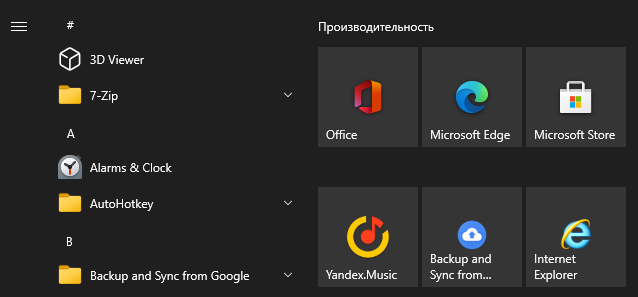

Закрепление значка Internet Explorer на начальном экране
Вы можете закрепить значок запуска Internet Explorer на начальном экране Windows (или
в области быстрого запуска меню Пуск).
Начальный экран Windows - это вариант интерфейса для быстрого запуска приложений, в
котором значки приложений оформлены в виде плиток и расположены по всему экрану (см.
изображение ниже).

Такой интерфейс по умолчанию включён на сенсорных устройствах
Область быстрого запуска меню Пуск также содержит крупные значки,
позволяющие запускать часто используемые приложения (на изображении эти значки
расположены справа).

Такой интерфейс по умолчанию включён на стационарных компьютерах и
ноутбуках (т. е. там, где подразумевается ввод с клавиатуры).
Note: В настоящем руководстве для наглядности
приведён пример размещения значка Internet Explorer в области
быстрого запуска.
Щёлкните на значке
(Пуск) в левом нижнем углу экрана.
Отобразится содержимое меню Пуск (см. изображение ниже).

В списке меню слева выберите Стандартные - Windows.

Щёлкните правой кнопкой мыши на пункте Internet Explorer и выберите
Закрепить на начальном экране (см. изображение ниже).

Значок Internet Explorer появится в области быстрого доступа меню
Пуск (см. изображение ниже).

Теперь вы можете запускать браузер Internet Explorer одним
щелчком из меню Пуск.
 (Пуск) в левом нижнем углу экрана.
Отобразится содержимое меню Пуск (см. изображение ниже).
(Пуск) в левом нижнем углу экрана.
Отобразится содержимое меню Пуск (см. изображение ниже).